-
Offset
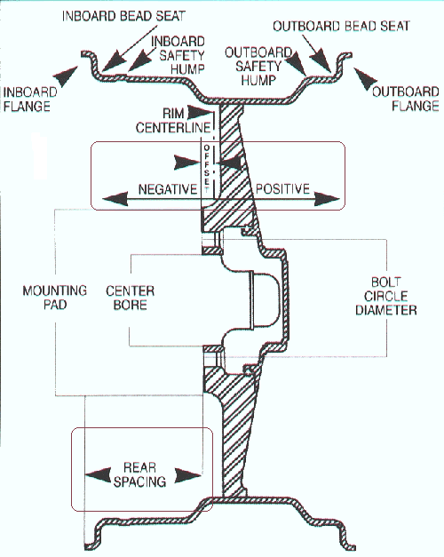
Offset is the distance from the center of the wheel to the mounting pad.
Important fact: a 7 inch wide wheel and an 8 inch wide wheel will need a Different offset to fit your car the same way.
If you want to have your wheels flush with the fender you will need to know what size wheel you want, how wide of a wheel, what tire size you want, and what offset to buy.
a 7 inch wide wheel is roughly 180mms
a 8 inch wide wheel is roughly 200mms
centerline for a 7 in wheel is 90mms so a 0 offset means the mounting pad is 90mms from the edge of the rim.
a +10mm off set has the mounting pad 80mms from the front lip and 100mms from the back lip so on and so forth.
Now that we know how the wheels are measured lets move on to the car.
Figuring out the offset you need for your car
To figure out the offset you need for your car you will need to place the car on a level surface, put a scissor jack under the shock mount and make it snug without lifting the car, now take a second jack and jack up the car, remove the wheel, lower the car gently onto the scissor jack.
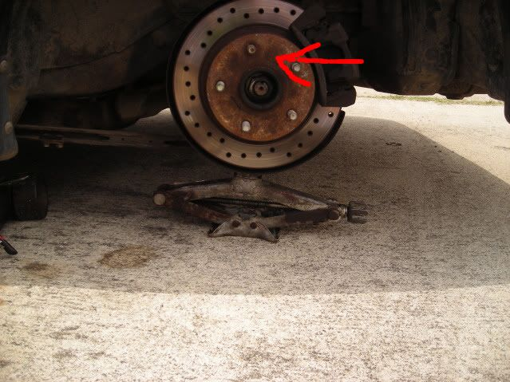
Red arrow shows mounting face you will be measuring from.
Then take a long level or yard stick and place it vertically touching the outermost edge of the fender, make sure it is level.
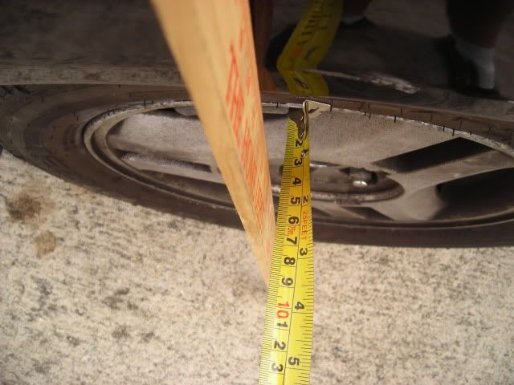
Like so except with the wheel removed
Measure the distance from the outer edge of the mounting pad, at the top and bottom to the level/ yardstick.
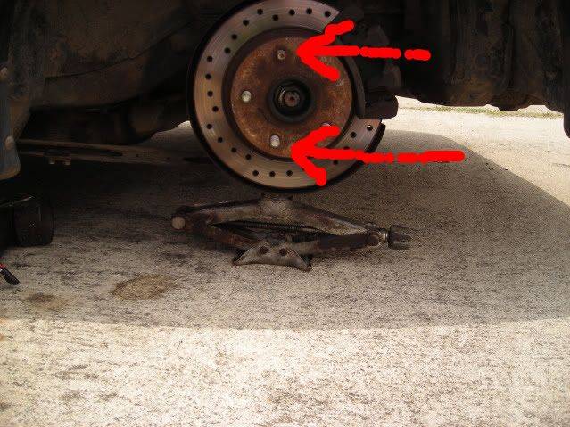
make sure you get the same number from both measurements
The measurement is 95mms, this means for a 7 in wheel you will need a -5 offset wheel to be 100% flush +16 offset to keep the tires from bashing the fender.
Backspacing
We now need to know what back spacing we can use. Stick a small straight edge on the face of the hub, not the center ring,
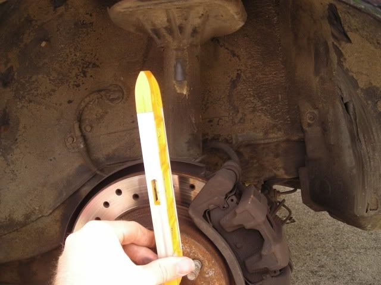
measure the distance from the straight edge to the strut, spring, and spring hat. Usually the spring won't be a problem, this is a just in case. Moving on, let's say the distance in the rear is 155mm.
With a 7 inch wheel, a +45 will be touching the strut.
Here is where tire size comes in. Lets review tire sizing.
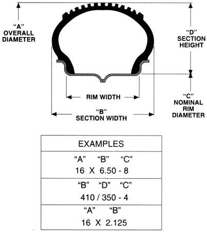
A 205/40/17 tire is 205mms wide
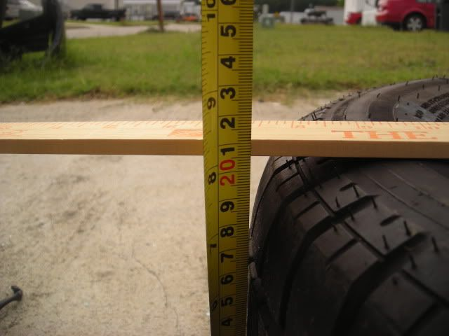
40 is the height of the sidewall (d in the picture) and represents the percentage of the width, for example the 40 means the side wall is 40% of 225. 17 is the size wheel it fits. pretty straight foward.
Flush
100% flush
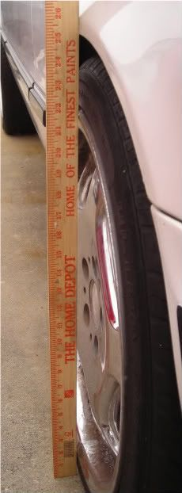
Now say your car is lowered, and your wheels are 100% flush, they will bash into your fenders, there are a couple ways to deal with this. the first relates to tire size, you can run a smaller width tire so the tire tucks into the fender, this is called stretching the tires and looks like this.
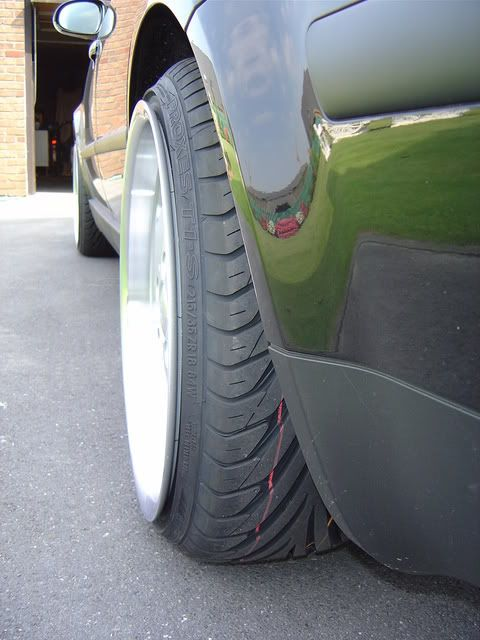
Rolling the fenders
Rolling the fenders Removes the lip around the inside of the fender well as to not damage your now flush tires.
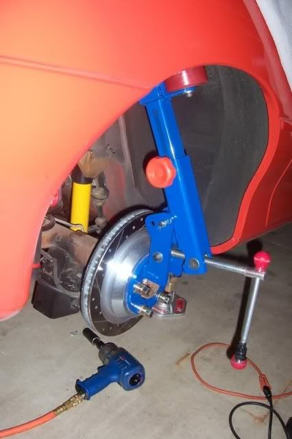
fender lip
20mms
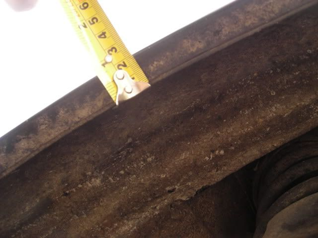
You will need a heat gun and a fender roller. First make sure the inside of the fender lip is CLEAN CLEAN CLEAN. any little dirt or pebbles in there will show in your roll (DZ tip) jack up the car, place it on a jack stand, remove the wheel, place a jack under the control arm and jack it up like when you were measuring offset, bolt on the fender roller, heat up the paint with the heat gun, being careful not to damage the paint, slowly work the fender roller around the inside lip of the fender.
Spacers and adapters
A spacer is a thin piece of metal that fits between the mounting pads of the wheel and hub.
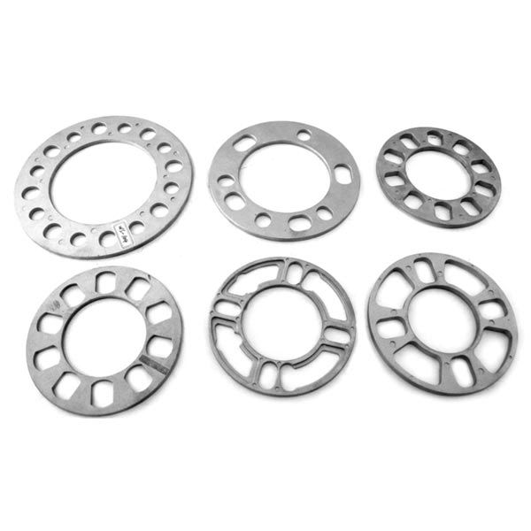
Adapters do the same thing, but have their own studs because they are thicker.
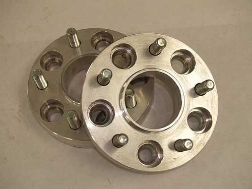
The purpose of spacers and adapters is to allow you to fit wheels that aren't quite the right size for your car, and or to make the wheels flush. When buying spacers or adapters you want to make sure they are hubcentric. Hubcentric means there is a ring that fits into the bore (small hole in the center of the wheel) and keeps the wheel centered.
Wheel and tire selection
To keep your speedometer accurate with larger wheels you need a smaller sidewall on your tires. Sidewall affects the roll out. Roll out is the circumference of the tire. Circumference is the distance around the outside of the tire. There are 2 ways to measure circumference, 1 wrap a tape measure around the tire, 2 measure the diameter of the tire. Diameter is the distance across the tire. If you stock tire is 20 inches tall you need your new tire to be 20 inches tall as well.
Will it fit
I see this a lot on several forums, and they usually ask
"Will a 17x7 fit on my Z"
This is not enough information. To tell you a correct answer we need to know the offset of the wheels.
Correct question
"will a 17x7 -40 fit on my car"
Now we can answer correctly.
Disclaimer
A tire that is wider than the wheel will affect these numbers. -
great! this should almost be pinned alot of people ask about this.86 NA
87 Turbo
Member of the "zetto sun-ichi" group
Local MN car forum/club anyone welcome..... fivezeroseven.net join! -
I did this for the probe, I don't have a Z currently so if someone wants to pm me the measurements of 84-85 86 and 87-89 or bring a Z by I can add them. -
For fender rolling, make sure the inside of the fender lip is CLEAN CLEAN CLEAN. any little dirt or pebbles in there will show in your roll.

1988 300zxt. gt35, stance, etc. Wheels: Varrstoen ES2 18x9.5 et-13 225/40. 18x10.5 et0 245/40
1990 jetta vr6'd -
Added and credited.DeleriousZ wrote: For fender rolling, make sure the inside of the fender lip is CLEAN CLEAN CLEAN. any little dirt or pebbles in there will show in your roll. -
When taking the offset measurements, remove the spring and jack the hub up to its ride height position. Then take your measurements.
Also, using a plumb bob works quite well."produce first.talk second." -
Good info.
I also found this site very helpful for estimating clearances and judging backspace.
http://www.rimsntires.com/specs.jsp?…&text1=&text2=My ride: 1984 300ZXT Anniversary Edition, SCCA BSP
See: http://z31performance.com/showthread…ight=vegasz31t

Copyright © 2006–. All rights reserved. Privacy Policy